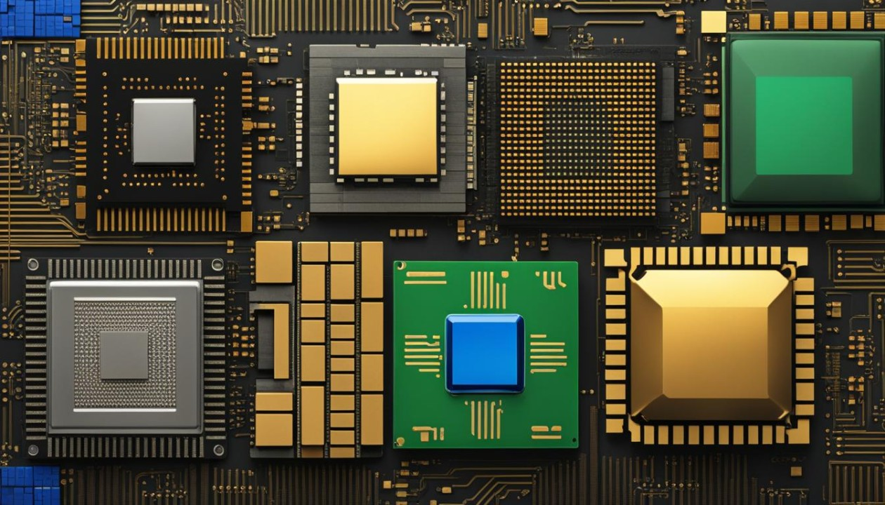

I microprocessori sono circuiti integrati complessi, essi sono nei computer e in molti dispositivi elettronici. Sono il "cervello" di questi dispositivi sono responsabili ad esempio della gestione delle operazioni di calcolo e del coordinamento di tutte le altre componenti del sistema. Un microprocessore moderno può contenere milioni o addirittura miliardi di transistor su un singolo chip.
Caratteristiche fondamentali dei microprocessori
1. Macchina sincrona
Un sistema è detto sincrono se le sue operazioni sono controllate da un segnale di clock, un'onda di impulso regolare che coordina le operazioni di tutti i componenti interni. Nel caso del microprocessore:
Il clock scandisce il tempo in cui ogni componente deve eseguire operazioni, permettendo che le varie sezioni lavorino contemporaneamente.
Il microprocessore elabora le istruzioni seguendo un ritmo definito dagli impulsi di clock, assicurando che le operazioni si svolgano in ordine e senza sovrapposizioni.
2. Macchina programmabile
Essere programmabile significa che il microprocessore può imparare, attraverso delle istruzioni, a eseguire compiti diversi tramite software:
I programmi sono costituiti da sequenze di istruzioni, che vengono memorizzate nella memoria e lette dal microprocessore.
Un microprocessore può eseguire vari programmi contemporaneamente, che possono essere modificati e aggiornati.
Grazie alla programmabilità, i microprocessori possono essere utilizzati in moltissime applicazioni, dal controllo di elettrodomestici fino ai computer.
Storia ed evoluzione dei microprocessori
La storia dei microprocessori inizia nel 1971 con l'introduzione dell'Intel 4004, il primo microprocessore commercialmente disponibile. Ecco alcuni momenti chiave nella loro evoluzione:
1971: Intel 4004 - primo microprocessore a 4 bit
2003: AMD Athlon 64 - primo processore 64-bit per PC consumer
2017: AMD Ryzen - rinnovata competizione nel mercato dei processori
Questa evoluzione ha visto miglioramenti esponenziali in termini di velocità di clock, numero di transistor, efficienza energetica e capacità di elaborazione.

Applicazioni dei microprocessori
I microprocessori sono onnipresenti nella tecnologia moderna. Alcune delle loro applicazioni principali includono:
Computer: desktop, laptop, server
Dispositivi mobili: smartphone, tablet
Elettrodomestici: lavatrici, forni a microonde, frigoriferi smart
Aerospaziale: sistemi di navigazione, controllo di volo
Tipi di microprocessori
I microprocessori possono essere classificati in base a vari criteri, tra cui:
Larghezza di banda dati:
Microprocessori a 8 bit: usati in sistemi embedded semplici
Microprocessori a 16 bit: comuni in applicazioni automotive e industriali
Microprocessori a 32 bit: ampiamente utilizzati in dispositivi mobili e sistemi embedded avanzati
Microprocessori a 64 bit: standard per PC moderni e server
Numero di core:
Single-core: un solo nucleo di elaborazione
Dual-core, Quad-core, Octa-core, etc.: processori multi-core per elaborazione parallela
Componenti principali di un microprocessore
Un microprocessore moderno è composto da diverse unità funzionali:
Unità di controllo (CU): coordina le operazioni del processore
Unità aritmetico-logica (ALU): esegue operazioni matematiche e logiche
Registri: memoria ad accesso veloce per dati temporanei
Cache: memoria ad alta velocità per dati frequentemente utilizzati
Bus di sistema: connette il processore ad altre componenti del sistema
Conclusione
I microprocessori rimangono una componente fondamentale della tecnologia moderna, in continua evoluzione. La loro capacità di elaborazione sempre crescente continua a permettere innovazioni in tutti i campi dell'elettronica e dell'informatica, aprendo la strada a nuove possibilità tecnologiche e applicazioni sempre più avanzate.